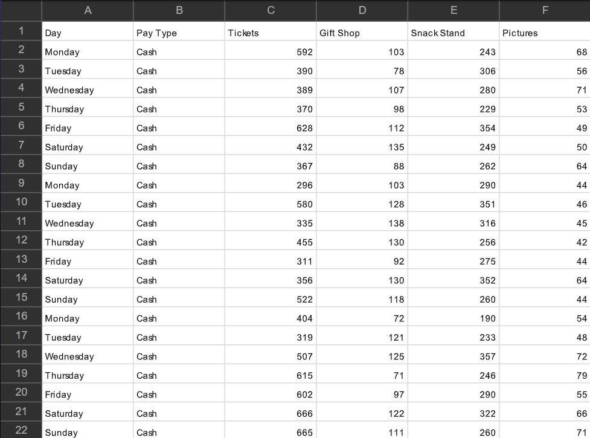

ESP - Task 4a: Developing A Solution
What Is Task 4a?
Task 4a is all about coding.
You will be given:
- A brief
- A CSV file containing data relevant to the brief
- A partially completed code
Your goal is to complete the code so that it meets the requirements of the brief, using Python and relevant libraries.
MatPlotLib
MatPlotLib is a Python library used for creating static, animated, and interactive visualizations.
You may use it to plot graphs and visualize data from the CSV file.
Pandas
Pandas is a powerful Python library for data manipulation and analysis.
It is commonly used to read, process, and analyze CSV files.
DateTime
The DateTime module in Python allows you to work with dates and times.
You may need it to process time-based data in your CSV file.
CSV Files
We talk more about CSV files in Task 3 but here is an example of an ESP Task 4a CSV File:

Differences:
- May contain more columns or different data types compared to Task 3
- Likely to include time-based or numerical data for analysis
- Structure may be tailored to the requirements of the brief
Marks
Task 4a is worth 34 marks.
The marks are split into 6 parts:
- Functionality - 6 marks
- Logic and programming structures - 3 marks
- Robustness - 3 marks
- Security - 6 marks
- Code organisation - 8 marks
- User experience - 8 marks
Time
You will have 4 Hours to complete this task.
Tips
- Practise using Python libraries such as Pandas and MatPlotLib before the exam.
- Read the brief carefully and understand the requirements before starting.
- Test your code thoroughly to ensure it meets all requirements.
- Comment your code to explain your logic and decisions.
- Use the CSV file effectively to analyze and present data as required.